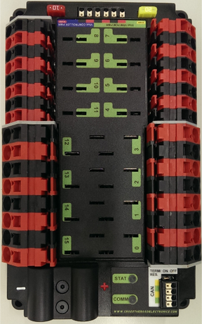
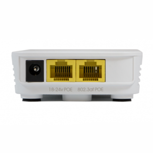
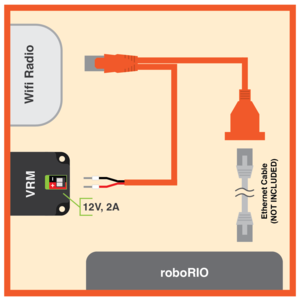
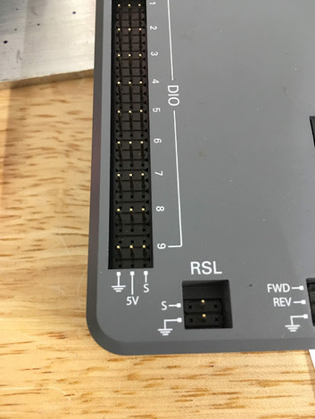
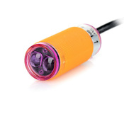
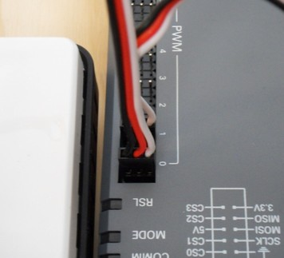

Westwood FRC Wiring Guide (2018-2019)

Table of Contents
Battery & Breaker

Power Distribution Panel (PDP)

(Down is the side with the power ports.)
Red 10 Amp breaker in top left
- RoboRIO goes in blue "Vbat CONTROLLER POWER"
Yellow 20 Amp breaker in top right
- VRM and PCM goes in green "Vbat VRM PCM PWR"
ports (0, 1, 3, 4, 12, 13, 14, 15):
- 40 Amp breaker
- Talons plug in here
ports (4, 5, 6, 7, 8, 9, 10, 11):
- 5, 20, or 30 Amp breakers
- Camera plugs in here
CAN Cable in CAN (bottom right):
Jumper switch must be in ON position
RoboRIO

(Up is the the side with the USB ports.)
22 guage Power Cable in INPUT (left of USB ports)
- Positive goes in V
- Negative goes in C
CAN Cable in CAN (left of power cable)
- Yellow goes in H
- Green goes in L
DIO sensors in DIO (left side)
- Boolean sensors go in DIO ports (Boolean sensors are sensors with only on and off states.)
- (e.g. Infrared sensors, limit switches)
- Begin plugging in sensors at 0 and count up (not required, good wiring practice)
PWM sensors in PWM (right side)
- Analog sensors go in PWM ports (Analog sensors are sensors with a range of outputs)
- (e.g. ultrasonic sensors, potentiometers)
- Some motor controllers and the Blinkin go in PWM ports
- Begin plugging in sensors at 0 and count up
RSL light in RSL (left-most bottom port)
- Positive goes in S
- Negative goes in ground (the dashed lines)
NavX in MXP (center)
- NavX gyroscope is mounted with majority of sensor closer to USB ports
Voltage Regulator Module (VRM)

(Down is the side with the 12V and 5V lights)
- Power Cables in 12V (top)
12V/2A (upper left)
Pneumatic Control Module (PCM)

(Left is the side with the Vin)
- PCM power in Vin (left)
- CAN Cable in CAN (top left)
- Pressure Meter Power in blue PRESSURE SW.
- Air compressor Power in green COMPRESSOR OUT
ports (0, 1, 2, 3, 4, 5, 6, 7)
Radio (OM5P-AC)

- Radio Power circular plug in left
- Camera ethernet in middle (not required)
- RoboRIO ethernet in right
Power over Ethernet (PoE)

- PoE power goes in VRM in same spot as circular plug
- PoE ethernet goes in middle in the radio
- PoE female end goes to Camera unlike in diagram
Talon SRX & Victor

Talon & Victor power are red and black
- plug in 40 Amp PDP port
- DO NOT PLUG INTO MOTORS
- Motor Power is green and white
Talon only: Encoder data cable on top, covered with hex screws & plastic cover
Robot Signal Light (orange RSL)

Power cable from RoboRIO
- Positive in La and Lb
- Negative in N

- Ports labled 0 through 9 on RoboRIO
- All digital sensors go in DIO ports
- Begin plugging in sensors at 0 and count up (not required, good wiring practice)
Grayhill Encoder

(Up is the direction so DIO and the numbers are upside up)
- DO NOT RELY ON COLORS OF DIO CABLES
- DO NOT BEND PINS
- Encoder has 5 pins labeled
B + A _ G (_ is blank)
- On 5 pin cable, connect to encoder so the missing wire goes to the _
- On 3 pin cable, connect to RIO so G is on the ground (bottom pin) of an EVEN position (not required wiring practice)
- On 2 pin cable, connect to RIO so signal (A or B) is on S (top pin) of the NEXT position (not required, good wiring practice)
- (e.g. if 3 pin cable is in position 4, the 2 pin cable goes in position 5)
- There are 128 clicks in a rotation
IR Sensor

(Up is the direction so DIO and the numbers are upside up)
- Blue or Green cable from sensor goes in ground (bottom pin)
- Brown or Red cable from sensor goes in positive (middle pin)
- Black or Yellow cable from sensor goes in signal (top pin)
Hall Effect Sensor

(Up is the direction so DIO and the numbers are upside up)
- The Hall Effect Sensor detects whether there is a magnet nearby the sensor (using the Hall Effect)
- GND on the sensor goes in ground (bottom pin)
- 5V on the sensor goes in the positive (middle pin)
- SIG on the sensor goes in signal (top pin)
Pulse-Width Modulation (PWM)

- Ports labeled from 0 through 9 on RoboRio
- All analog sensors and some controllers go in PWM ports
- Begin plugging in sensors at 0 and count up (not required, good wiring practice)
REV Blinkin

- Rated for 12V/5A
- ~ is the signal PWM and is closest to the power wires on the Blinkin
- ~ goes in the signal on the rio which is closes to the center of the rio
- Specific documentation can be found here
CAN LOOP Instructions
Wiring Gauge guide
22 gauge:
16 gauge:
- Talon Power
- Victor Power
- Motor Power
6 gauge: